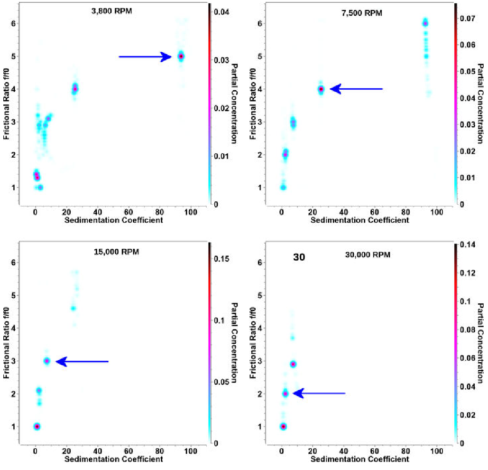
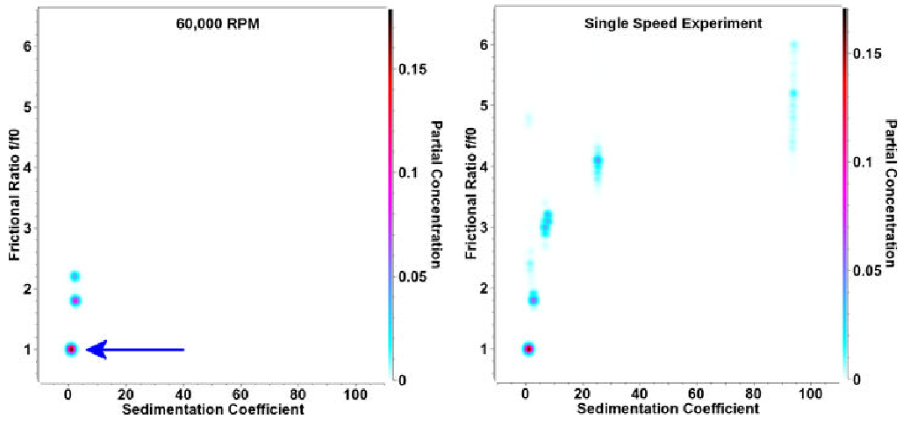

MS: ✓ 22.07.22
BS: ✗
Multi-Speed Sedimentation Velocity
For more information, see:
While the AUC can be used to measure a wide range of molecular sizes (Angstroms to several hundred nanometers), these paramaters are restricted by the molecule's density, the buffer's density, and the rotor speed. Recall the section on speed in the page on the experimental technique of sedimentation veloctity. When observing the properties of a single molecule, judicious selection of one rotor speed optimizes the avaliale information, but accurary and precision is sacrified when one is limited to only selecting one speed for heterogenous mixtures. Heterogeneous mixtures present complications making it that no single speed will be optimal for all species. Single speeds can also prevent the investigator from asking specific questions together.
For example:
-
If molar mass or anisotropy needs to be determine, you will need to have a slow speed to generate sufficient diffusion information. However this sacrifices composition details.
-
If composition detail is required, you need a higher speed, but balancing the signals from diffusion and sedimentation using only one speed is challanging. There is no guide to consult and the composition is not known before hand to help with picking the optimal speed.
Therefore, the ability to perform an experiment at multiple speeds provides additional detail and resolution for mixtures of particles that are heterogenous in sedimentation coefficients.
The main idea behind multi-speed SV experiments is this: for mixtures containin solutes that exhibit range in sedimentation and diffusion coefficients, experiments with speed profiles incorporating multiple speeds will better match the properites of each solute.
Experimental Design
Now, we will describe:
-
how to design a suitable speed profile for a heterogeneous mixture, and;
-
how a suitable finite-element analysis method can exploit the sedimentation and diffusion signal avaliable from multiple speed steps.
For heterogeneous systems, each component will have a different sedimentation coefficient, and so the duration will be diferent for each species. As described previously, the equation to determine the theoretical duration of an experiment is:
where \(r_{m}\) is the meniscus position and \(r_{b}\) is the bottom position of the cell (considered to be infinitely long). The optimal time, \(t\), is no less than the duration required for the midpoint of the boundary from each component with sedimentation coefficient, \(s\), to sediment from the meniscus position to the point where it would reach the bottom of the cell.
Knowning this, the first speed step should start with the lowest speed which will have a low enough speed, \(v_{1}\), and large enough duration, \(t_{1}\), to provide sufficient diffusion signal and scanning time. This speed will optimally describe the largest species in the system.
The second speed step, \(v_{2}\), is for measuring the second largest species. For predicting \(t_{2}\), consider the sedimentation displacement for species 2 during the first speed step and subtract that amount from the sedimenation still required from the boundary midpoint from species 2 to reach the bottom.
Subsequent speed steps, \(v_{n}\), follow the same principle with each species aquiring a new meniscus from each speed step. The change in speed for each step depends on the \(s\) value distribution. This value can be approximated from a single-speed experiment if it is not known.
Here is a program (pdf, C++ file) that takes the original meniscus, the largest \(s\) value, and the starting and maximal rotor speed to predit the apropriate rotor speeds and speed step durations for optimal speed step configurations.
Overall, variable speed profiles allow the investigator to obtain much higher precision and accurary for heterogeneous samples. This is exceptionally demonstrated in the example below.
Example: Experimental Design for 5-Component Simulation Model
To establish the value of multi-speed SV measurents, consider the following example where a mixture of five discrete components at identical concentrations are simulated. The components span five orders of magniture in molar mass, have a five-fold change in anisotropy, and have identical partial specific volumes.
\(\textbf{Table 1}\): Simulation parameters for a five-component simulation model.
Speeds were chosen to span the range of the AUC such that there is approximately a factor of 250-fold change in the centrifugal forces. Each speed step was simulated to obtain 100 equally space scans in time. Since data can only be collected at periods of constant rotor speed, an acceleration delay is added before the first scan can be simulated. This also allows for the simulation of discrete speed steps as opposed to a continious ramping of speed.
\(\textbf{Table 2}\): Simulation speeds and durations.
 
\(\textbf{Figure 1}\): 2DSA-MC results for individual speed steps combined into a global model (pseudo-3D representation). At each speed, a different solute is optimally measured and incures the narrowest confidence limits (blue arrow).
Lower Right: 2DSA-MC result for a result single-speed experiment at 15 kRPM for 8 hours.
The SV simulation data was analyzed using 2DSA- Monte Carlo analysis to derive fitting statistics. Importantly, the single best reproduced species is different for each speed step and when all speed steps are considered, each species can be defined with a very low error. When compared to a simulated standard single speed SV experiment, there is a 54% improvement when performing the multi-speed simulation (analyzed with 2DSA-MC). With a GA-MC analysis, this improvement jumps to 60%.
Fitting Approaches
Fitting SV experimental data acquired at multiple speeds pose a series of challenges when fitting the data. These challenges are rotor stretch, shifting radial positions at different speeds, and the lack of acceleration profiles and time-state information. Solutions for these issues have been resolved and implemented in UltraScan.
UltraScan separates each speed step into seperate experimental datasets when collecting multi-speed data. Initially, each speed step must be analyzed as a separate experiment. The first step in the analysis procedure is to identify the maximum \(s\) value. The slowest speed step contains the signal from the fastest sedimenting solutes and should therefore be used to determine the upper limit of all speed steps. To eliminate time-invariant noise by scan pair subtraction, it is best to use the time-derivative method1 that is implemented in UltraScan. To estimate the upper limit, select a group of scans near the end of the first speed step. The point where the \(g^{*}(s)\) distribution approaches zero on the high end of the sedimentation coefficient spectrum should represent the upper limit. For the lowest \(s\) value, it is usually appropriate to set it to 0.5 s, unless otherwise known to be higher. Frictional ratio ranges can also be chosen based on prior knowlege of the system's species.
The data analysis on UltraScan is performed on parallel architectures.2 The steps are the same as those outlined in the Sedimentation Velocity Analysis Flowchart. Remember that each speed step should be treated initially as a separate analysis, allowing for the use of a different 2DSA grid for each speed step. Furthermore, each speed step requires simulation of all the prior speed steps becuase the acceleration history needs to be preserved to obtain the appropriate initial concentration distribution for each modelled solute at the beginning of each speed step.
-
Stafford, W. F. (1992). Boundary analysis in sedimentation transport experiments: A procedure for obtaining sedimentation coefficient distributions using the time derivative of the concentration profile. Analytical Biochemistry, 203(2), 295-301. https://doi.org/10.1016/0003-2697(92)90316-Y↩
-
Brookes, E., & Demeler, B. (2008). Parallel computational technqiues for the analysis of sedimentation velocity experiments in UltraScan. Colloid Polym Sci, 236, 138-148.↩